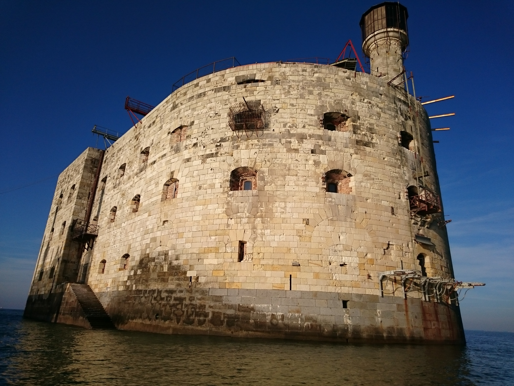
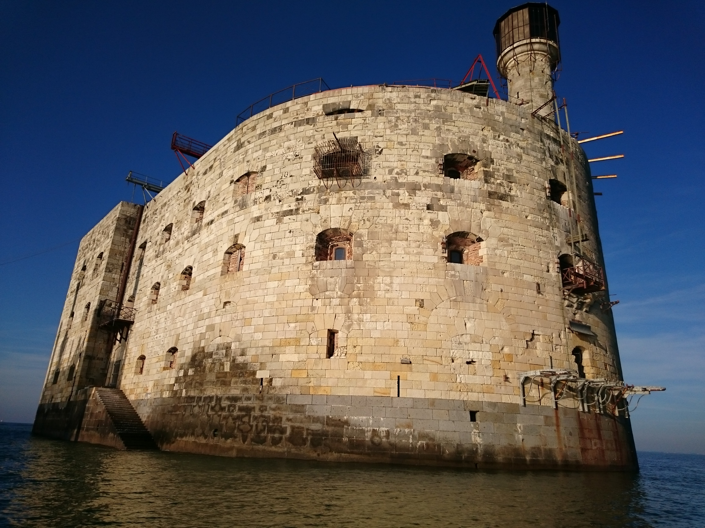

Fort
Boyard
Balades autour de Fort Boyard à la voile

 

Fort Boyard, pas que sur France 2
Le Fort Boyard n’est pas seulement connu depuis les années 1990 et la célèbre émission de France 2. C’est en effet en 1661, après que Colbert ait créé l’arsenal de Rochefort à la demande de Louis XIV, qu’il a fallu protéger cette rade des incursions anglaises. Il est alors décidé de construire un fort dont la meilleure position stratégique est située entre l’Ile de Ré et l’Ile d’Oléron. Malheureusement, le projet est abandonné car cet endroit, appelé « longe de Boyard » est un haut fond de sable impropre à la construction d’un édifice solide.
Fort Boyard par la mer, fort Boyard sous le vent
Vous pourrez revivre et imaginer sa construction grâce au circuit que nous vous proposons à bord de notre voilier. Impossible à atteindre par un autre moyen, le fort et la fameuse longe de Boyard gardent en effet tous leurs secrets que nous vous proposons de percer grâce à nos balades quotidiennes que la mer soit basse ou haute.
Fort Boyard & Napoléon
En 1801, Napoléon reprend l’idée d’un fort sur la longe de Boyard, le Fort Boyard est né. Conçu pour soutenir un siège, cet édifice de 68 mètres de long et 31 mètres de large pour une hauteur de 20 mètres servira ensuite de prison sous la Commune pour être abandonné par l’armée française en 1913. Réhabilité dans les années 90 pour le célèbre jeu télévisé Fort Boyard, le fort s’offre à vous au milieu de l’océan.
Visite, navigation & convivialité à la Charentaise :))
Outre la visite des lieux, le capitaine vous offrira aussi de barrer le voilier, d’apprendre les rudiments de la navigation et quelques blagues du cru dont il a le secret !